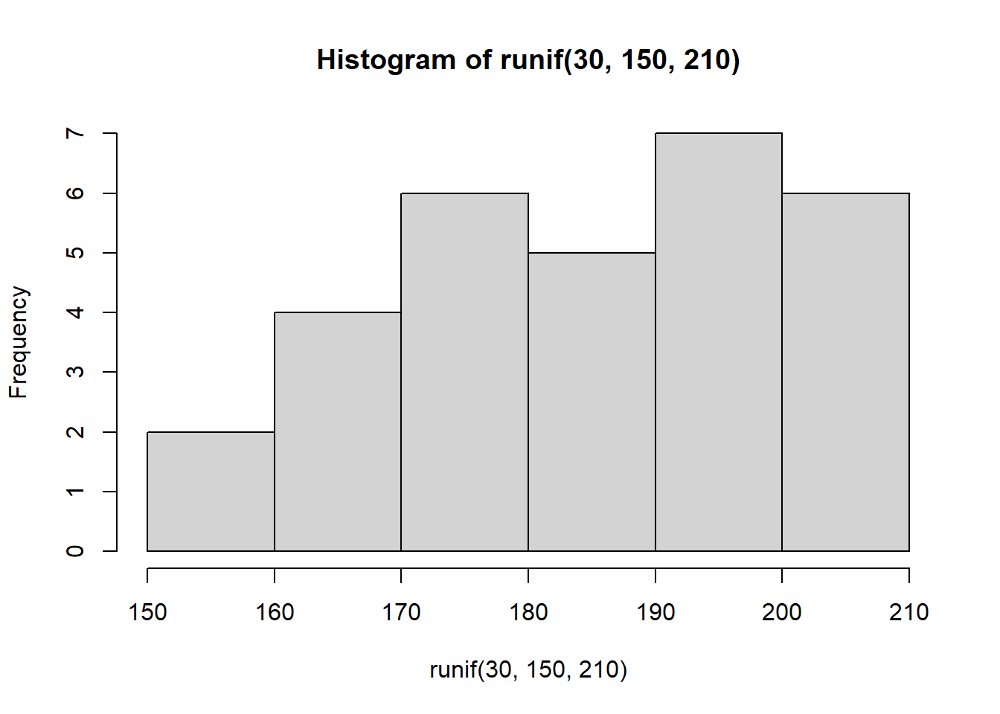

6 Wochenplan 06
…zur Einheit vom 22. & 29.10.2020, aktives Rezipieren von R-Code und Repetition (Beispiel Inferenzstatistik)
6.1 Lernziele WP06
Über die vergangenen Wochen haben wir zahlreiche grundlegende Aspekte der Arbeit mit R kennengelernt. Als Vorbereitung im Rahmen des Wochenplans 06 sollen Sie diese Inhalte noch einmal Revue passieren zu lassen. Im Rahmen dieser Repetition werden weiter zwei neue Dinge vermittelt werden: Auf der einen Seite erfolgt die Schulung aktiver Rezeptionsfertigkeiten (sprich: R-Code lesen und verstehen lernen). Auch dies ist eine wichtige Arbeitstechnik in R. Auf der anderen Seite sollen Sie mit dem rezipierten Code das Prinzip der Inferenzstatistik (und der Stichprobenverteilung sowie des Standardfehlers) in R veranschaulicht bekommen.
Konkret lassen sich folgende Seminarziele festhalten:
Sie können von einer anderen Person geschriebenen R-Code entziffern und mit Kommentaren versehen.
Sie entwickeln dabei ein Gefühl für unterschiedliche Arten, Code lesbar zu gestalten.
Sie wissen, wie selbstgeschriebene Funktionen in R aussehen und können diese Schritt für Schritt interpretieren.
Sie entwickeln Ihr Verständnis davon weiter, wie in R Grafiken genutzt und angepasst werden, um statistische Inhalte zu visualisieren.
Sie nutzen R um im gegebenen Beispiel über Konzepte der Inferenzstatistik (wie den Standardfehler) nachzudenken.
6.2 Aufgaben WP06
Öffnen Sie die Datei “standardfehler.R” in RStudio (auf OLAT verfügbar). Gehen Sie den Code Zeile für Zeile durch und versuchen Sie im Detail (!) zu verstehen, was hier vor sich geht. Halten Sie Ihre Einsichten als Kommentare fest. Auch allfällige Fragen und Unklarheiten können Sie einfach als Kommentare notieren.
Fügen Sie anschliessend die von Ihnen gesammelten Fragen und die dazugehörigen Codezeilen in ein Markdown-Dokument ein. Die Codezeilen sollen als R Chunk im Markdown aufgeführt sein, aber mit der Ergänzung
eval = FALSEversehen. Im Fliesstext des Markdowns können Sie Ihre Frage erläutern.Führen Sie den Code Schritt für Schritt aus. Konzentrieren Sie sich dann auf den letzten Punkt (“# Gemeinsame Darstellung …”). Was hat dieser Code mit dem Konzept des Standardfehlers / des Stichprobenfehlers zu tun? Spielen Sie ein wenig mit den verschiedenen Parametern - welche Zusammenhänge, die für den Standardfehler wesentlich sind, lassen sich erkennen?
Sammeln Sie Punkte, die Ihnen aus den bisherigen Seminareinheiten unklar geblieben sind. Welche Aspekte würden Sie gerne noch einmal wiederholen/erläutert bekommen? Sammeln Sie diese Aspekte ebenfalls im Markdown auf dieselbe Art und Weise wie bei Aufgabe 2.
6.3 Besprechung Skript “standardfehler.R”
Der Code “standardfehler.R” ist ein Skript zur Simulation des Standardfehlers und soll helfen, das Prinzip der Inferenzstatistik, den Standardfehler sowie die damit zusammenhängenden Ebenen von Grundgesamtheit, einzelner Stichprobe und Stichprobenverteilung zu verstehen und zu veranschaulichen (vgl. Diaz-Bone 2019, 145f).
6.3.1 Ebene der Grundgesamtheit
Unsere Grundgesamtheit bilden 1000 Ausprägungen einer beliebigen Variable, die hier nun gleichverteilt ist und sich zwischen 0 und 20 bewegt. Die Verteilung dieser Variable können wir dann in einem Histogramm darstellen.
## [1] 9.868251## [1] 5.779099hist(variable_population,
breaks = 30,
col="orange",
main="Unsere Grundgesamtheit",
xlim = c(0,20)
)
6.3.2 Ebene der einzelnen Stichprobe
Als nächster Schritt wird nun eine Stichprobe gezogen mit der Funktion sample(), in der zufällig 100 Fälle der Grundgesamtheit landen. Von dieser Stichprobe können wir dann den Mittelwert berechnen und diesen Wert in das Histogramm der Grundgesamtheit einfügen. Der Mittelwert der Stichprobe unterscheidet sich natürlich minimal vom Mittelwert der Grundgesamt.
## [1] 11.20421hist(variable_population,
breaks = 30,
col="orange",
main="Unsere Grundgesamtheit",
xlim = c(0,20)
)
points(rep(mean(sample1), 2),
c(0, 100),
type = "l",
col = "black",
lwd = 8)
#Hier wird nun auch noch der Mittelwert der Grundgesamtheit eingefügt
#...aber mittels der Funktion 'abline()'
abline(v=mean(sample1), col = "red", lwd = 3)
Da wir nun mit einer fiktiven Grundgesamtheit und in einem Modell arbeiten können wir immer wieder neue Stichproben ziehen. Dies könnten wir realisieren, indem wir den Codechunk von oben immer wieder repetieren. Oder als “elegantere” Variante: Wir schreiben uns den Code für eine for-Schleife, die uns eine beliebige Anzahl Stichproben zieht (i), den Mittelwert der Stichprobe berechnet und diesen Mittelwert in das Histogramm der Grundgesamtheit einzeichnet.
Der folgende Code ruft nun nochmals das Histogramm der Grundgesamtheit auf. Anschliessend zieht die Schleife 100 Stichproben, berechnet deren Mittelwerte und fügt diese als Linie mit verschiedenen Farben in die Grafik ein.
hist(variable_population,
breaks = 30,
col = "orange",
main="Unsere Grundgesamtheit",
xlim = c(0,20)
)
for (i in 1:100) {
sample1 <- sample(variable_population, 100)
points(rep(mean(sample1), 2),
c(0, 200),
type = "l",
col = i,
lwd = 1)
}
Wir sehen dass mit jeder gezogener Stichprobe der Mittelwert etwas abweicht von demjenigen Wert in der Grundgesamtheit.
Als nächster Schritt wird nun eine Funktion geschrieben, mit der wir eine beliebige Anzahl Stichproben mit einer beliebigen Grösse ziehen können. Die Grundstruktur von Funktionen entspricht folgender Form (Manderscheid 2017, 240f):
eigene.funktion <- function(argumente) {
anweisung
}
Im Funktionskopf innerhalb der runden Klammern, die auf function folgen, werden die formalen Argumente benannt und durch Kommas voneinander getrennt. Damit wird festgelegt, welche Eingabeinformationen die Funktion benötigt. In unserem Beispiel sind dies die (selbstgewählten) Begriffe x (Objekt, von dem die Stichprobe gezogen werden soll), n (Grösse der Stichprobe) und trials (Anzahl der zu ziehenden Stichproben).
Alle im Funktionskopf enthaltenen Argumente müssen im Funktionsrumpf, der in geschweiften Klammern {} folgt, als Objekte definiert werden. Der Funktionsrumpf besteht aus einer Reihe von Befehlen. Die in unserem Code definierte Funktion definiert zuerst ein Sample von der Grösse n aus dem Objekt x. Anschliessend hängt eine Schleife die Anzahl trials-1 weitere Sample an das bereits gezogene Sample dran.
Die einzelnen Schritte, die im Funktionsrumpf festgelegt werden, erscheinen nicht in der Konsole. Nur das Ergebnis der letzten Funktion im Rumpf erscheint abschliessend als Rückgabewert. Da in unserem Beispiel kein Ergebnis erzeugt wurde stellt die Funktion return() sicher, dass das Resultat der Funktion (das Objekt variable sample) ausgegeben wird.
Im letzten Codestück wird dann vom unsere Grundgesamtheit (x) eine 30er Stichprobe gezogen (n), und zwar 200mal (trials). Das Objekt stichproben_200 ist also eine Matrix mit 30 Zeilen und 200 Spalten.
6.3.3 Ebene der Stichprobenverteilung
Bereits in den vorhergehenden beiden Schritten (Stichprobe als Schleife und Stichprobe als Funktion) ging es nicht mehr nur um eine einzelne Stichprobe, sondern um verschiedene Stichproben und deren jeweilige Mittelwerte. Wir gehen also über zu einer Stichprobenverteilung. Im folgenden Code werden zuerst die Stichprobenkennwerte berechnet (d.h. die Mittelwerte der 200 gezogenen Stichproben) und dann als Histogramm dargestellt: Das Histogramm entspricht der Stichprobenverteilung der Stichprobenkennwerte.
stichproben_200 <- meine_samples(variable_population, 30, 200)
mittelwerte <- apply(stichproben_200, 2, mean)
hist(mittelwerte,
breaks = 10,
col = "blue",
main = "Unsere Stichprobenmittelwerte",
xlim=c(3,17)
)Hierbei wird nun ersichtlich, dass diese Stichprobenverteilung der Normalverteilung folgt (ab einem Stichprobenumfang von 30). Das heisst eben auch, dass je stärker ein Stichprobenmittelwert vom Mittelwert der Grundgesamtheit abweicht, desto unwahrscheinlicher ist dieser Wert. Oder umgekehrt: Tritt ein sehr stark abweichender Wert auf ist dies mit hoher Wahrscheinlichkeit nicht zufällig.
In den folgenden Codezeilen wird nun die Stichprobenverteilung in das Histogramm der Grundgesamtheit eingefügt. Die Idee hierbei ist, dass die Stichprobengrösse dank der eigenen Funktion variiert werden kann. Daraus wird ersichtlich, dass je grösser der Stichprobenumfang ist, desto schmaler wird die Stichprobenverteilung (das blaue Histogramm), das heisst: desto kleiner wird der Standardfehler.
hist(variable_population,
breaks = 30,
col = "orange",
main = "Grundgesamtheit mit Stichprobenverteilung",
xlim = c(0, 20),
)
mittelwerte_samples <- apply(meine_samples(variable_population,
30,
1000),
2,
mean)
hist(mittelwerte_samples,
breaks = 10,
col = "blue",
add = T)
Damit können wir uns nochmals die expliziten Parameter der Stichprobenverteilung vergegenwärtigen: Auf der einen Seite haben wir das arithmetische Mittel der Stichprobenmittelwerte, das heisst:
\(\mu\frac{ }{ x }\)
Dieser Wert entspricht (annährend) dem arithmetischen Mittelwert des metrischen Merkmals in der Grundgesamtheit:
\(\mu\frac{ }{ x } = \mu\)
## [1] 9.900318## [1] 9.868251Auf der anderen Seite finden wir die Standardabweichung der Stichprobenverteilung, der Standardfehler (oder Stichprobenfehler):
\(\sigma\frac{ }{ x } = \frac{ \sigma }{ \sqrt{ n } }\)
Dieser Wert gibt das Ausmass der Streuung der Stichprobenmittelwerte um den Mittelwert an.
## [1] 1.055114…und entspricht natürlich einfach der Standardabweichung unserer Stichprobenverteilung:
## [1] 1.070461Die Stichprobenmittelwerte streuen umso geringer um den Mittelwert der Stichprobenverteilung (das heisst um den Wert in der Grundgesamtheit), je grösser der Umfang der Stichprobe ist. Das heisst die Stichprobenwerte werden immer “genauer”, da deren zufällige Abweichung verkleinert wird.
hist(variable_population,
breaks = 30,
col = "orange",
main = "Grundgesamtheit mit Stichprobenverteilung",
xlim = c(0, 20),
)
mittelwerte_samples <- apply(meine_samples(variable_population,
120,
1000),
2,
mean)
mittelwerte_samples <- mittelwerte_samples
hist(mittelwerte_samples,
breaks = 10,
col = "blue",
add = T)
## [1] 0.5074497References
Diaz-Bone, Rainer. 2019. Statistik Für Soziologen. Konstanz: UVK.
Manderscheid, Katharina. 2017. Sozialwissenschaftliche Datenanalyse Mit R. Eine Einführung. Wiesbaden: Springer VS.